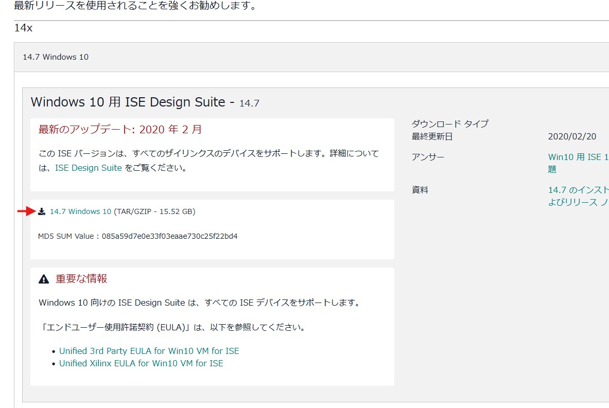
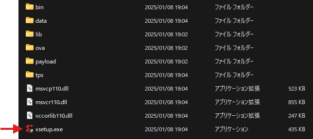
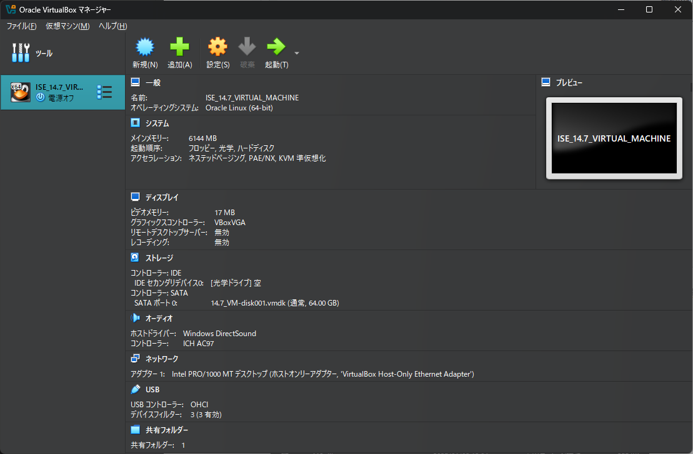
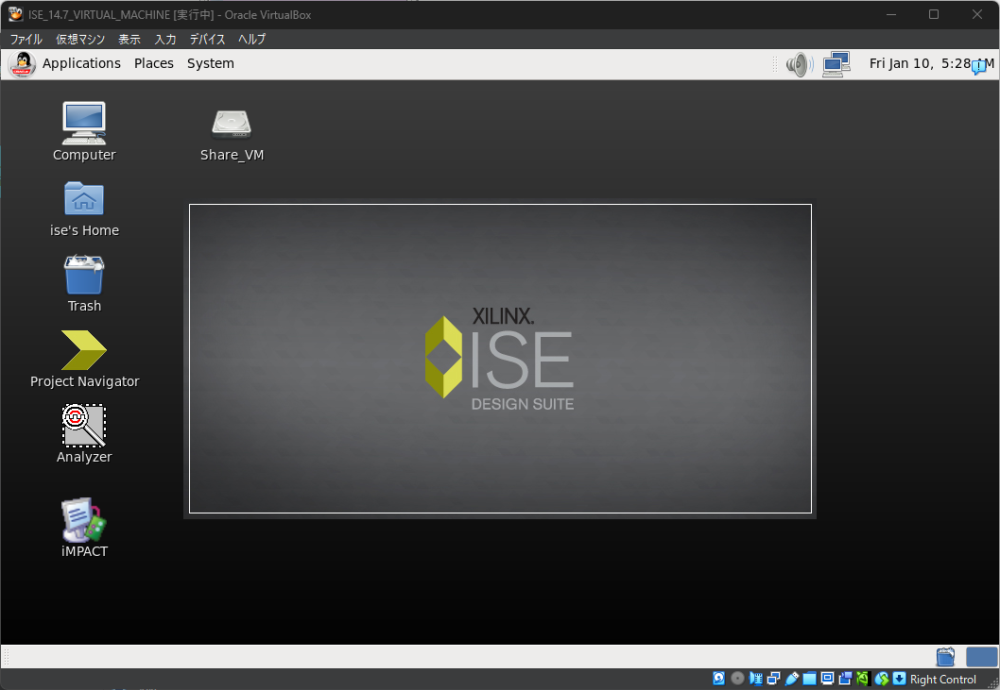
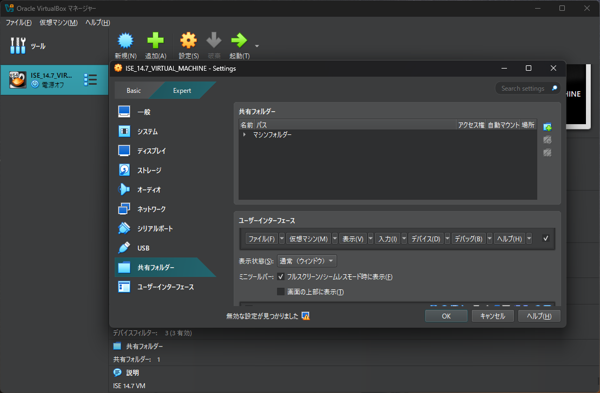
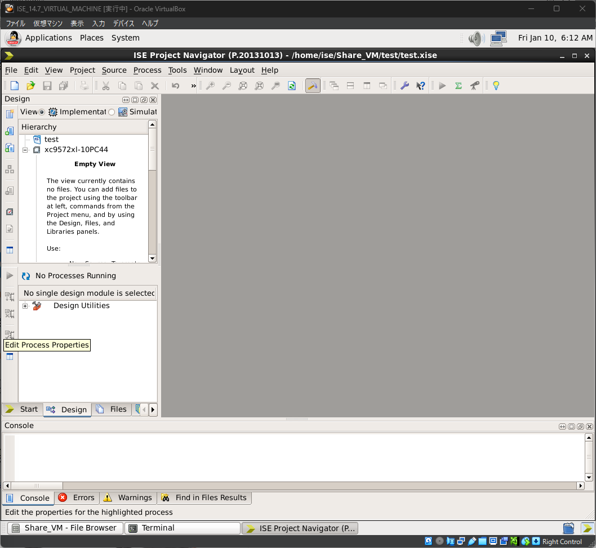
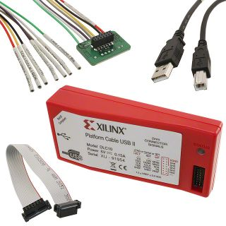
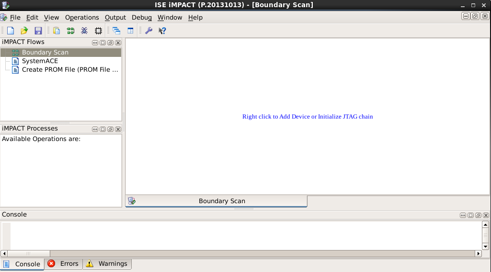

研究室にはXilinxの古いCPLD、XC9572XLを結構在庫しており、これを使ってたまにデジタル位相比較器を作ったりします。先日も作ろうとしたところ、Windows 11では対応する開発環境ISEが動かないことが分かりました。色々調べてみると、ISEの最終版であるv14.7を仮想環境を使って動かせということらしいです。
というわけで、仮想環境のインストールからCPLDへの書き込みまでひと通りできるようにしたので、まとめておきます。
全体の流れ
- 開発環境（ISE）の準備
- Oracle VirtualBoxのインストール
- ISE 14.7 VM for windows 10のインストール
- 仮想環境とのファイル共有設定
- Verilog HDLファイル（***.v）の作成
- 制約ファイル（***.ufc）の作成
- 基板との接続
- プログラム
動作確認環境
| 動作確認環境 | |
|---|---|
| OS | Windows 11 24H2 |
| CPU | AMD Ryzen 7 8700F |
| CPLD | XC9572XL |
| 開発環境 | ISE 14.7 VM |
| 書き込みケーブル | UW-USB-II-G |
開発環境（ISE）の準備
ISEの開発は執筆次点で既に終了しており、最終版（v14.7）を使用することになります。Windows 10以降のOSに対応するため、仮想環境内でISEを実行する仕様となっています。
Oracle VirtualBoxのインストール
仮想環境を構築するために、あらかじめOracle VirtualBoxをインストールします。

Windows用のインストーラをダウンロードし、インストールします。
ISE 14.7 VM for windows 10のインストール
VirtualBoxをインストールしてから、ISE 14.7 VM for windows 10をインストールします。VirtualBoxがインストールされていないと、失敗するので注意して下さい。XilinxのISEアーカイブページから、ISE最終版のインストーラをダウンロードします。
ダウンロードにはXilinx (AMD)アカウントへのログインが必要になります。あらかじめ作成しておいて下さい。

ISEのインストーラはかなり大きなZIPファイルとなっています。ダウンロードしたZIPファイルを展開し、xsetup.exeを実行してインストールします。

インストール完了後、VirtualBoxを起動すると、ISE 14.7の仮想環境が既に設定された状態になっています。ISE 14.7を選択して起動すると、仮想環境でLinuxが起動します。LinuxデスクトップにあるProject NavigatorアイコンからISEを起動できます。


仮想環境とのファイル共有設定
VirtualBoxの仮想環境にファイルを転送する方法には、以下の2通りあります。
- クリップボードを共有する
- 共有フォルダを設定する
ところが、クリップボードを使う方法はなぜかうまくいきませんでした。なので、ここでは共有フォルダを設定する方法を説明します。
- VirturalBoxを立ち上げ、ISE 14.7を選択
- 設定 > 共有フォルダーを選択

- 右側の
共有フォルダー追加ボタンをクリックし、ホスト側のフォルダのパス、フォルダ名を記入 - オプションは
自動マウントにチェック
これで、仮想環境を立ち上げるとLinuxデスクトップ上に共有フォルダアイコンが現れます。
新規プロジェクトの作成
LinuxデスクトップでISEを起動し、メニューバーのFile > New Projectを選択します。
プロジェクト名、プロジェクトを作成するディレクトリ（デフォルトは自動設定）、ソースコードの種類を選択します。ソースコードのタイプは
HDLを選択します。Project Settingsでデバイス情報などを入力します。ここでは使用するCPLDと言語に合わせて
- Family:
XC9500XL CPLDs - Device:
XC9572XL - Package:
PC44 - Speed:
-10 - Preferred Language:
Verilog
と設定しました。他はデフォルトのままにしました。
- Family:
Project Summaryが表示されるので、確認して
Finishを押します。
Verilog HDLファイル***.vの作成
- ISE Project NavigatorのHierarchyウィンドウで右クリックし、
Nwe Sourceを選択します。Verilog Moduleを選んでファイル名を入力してNextを押します。

- 各portの設定画面になるので、Port名、input/outputの方向などを入力して
Nextを押します。後で変更できるので、ここでは何も記入しなくても大丈夫です。 - Verilog HDLファイルが作られるので、コードを編集します。
制約ファイル***.ufcの作成
- ISE Project NavigatorのHierarchyウィンドウで右クリックし、
Nwe Sourceを選択します。Implementation Constraints Fileを選んでファイル名を入力してNextを押します。 - 確認画面が出るので、
Finishを選択すると制約ファイル***.ufcが作られます。これを編集して入出力を設定します1。
基板との接続
ここでは純正のプログラマケーブル（UW-USB-II-G）を使用する場合について説明します。

以下のように接続します。接続するには、基板側の電源をONにする必要があります。
| UW-USB-II-G | 接続基板側JTAG |
|---|---|
| VREF | VCC |
| TCK | TCK |
| HALT | 接続なし |
| TDO | TDO |
| TDI | TDI |
| TMS | TMS |
| GND | GND |
内蔵メモリへの書き込み
コンパイル
ISE Project NavigatorのProcessesウィンドウのImplement Designで右クリックし、Runを実行します。
問題がなければ、Translate、Fit、Generate Programming Fileに緑チェックが付きます。
生成されたJEDファイルの書き込み
- プログラマケーブルと基板を接続し、基板側の電源をONにします。
- ISE Project NavigatorのProcessesウィンドウの
Configure Target Deviceをダブルクリックすると、書き込み用アプリのiMPACTが起動します。 - iMPACT Flowsウィンドウの中の
Boundary Scanをダブルクリックします。現れたBoundary Scanウィンドウ内で右クリックし、Initialize Chainを選択すると、接続されたCPLDが表示されます。このとき、そのままConfigurationファイルをアサインするか聞かれるので、Yesを選択し、***.jedファイルを選んでOpenを押します。次のダイアログも、そのままOKを押します。 - Identify Succeededと表示されたら認識OKです。Boundary Scan内で右クリックし
Programを選択すると、書き込みが開始されます。 - Program Succeededと表示されたら書き込み完了です。

参考資料
Footnotes
このバージョンのISEはPlanAheadには対応しておらず、GUIを使った制約ファイル（配線情報）を作成することはできません。直接コードを記述して下さい。↩︎